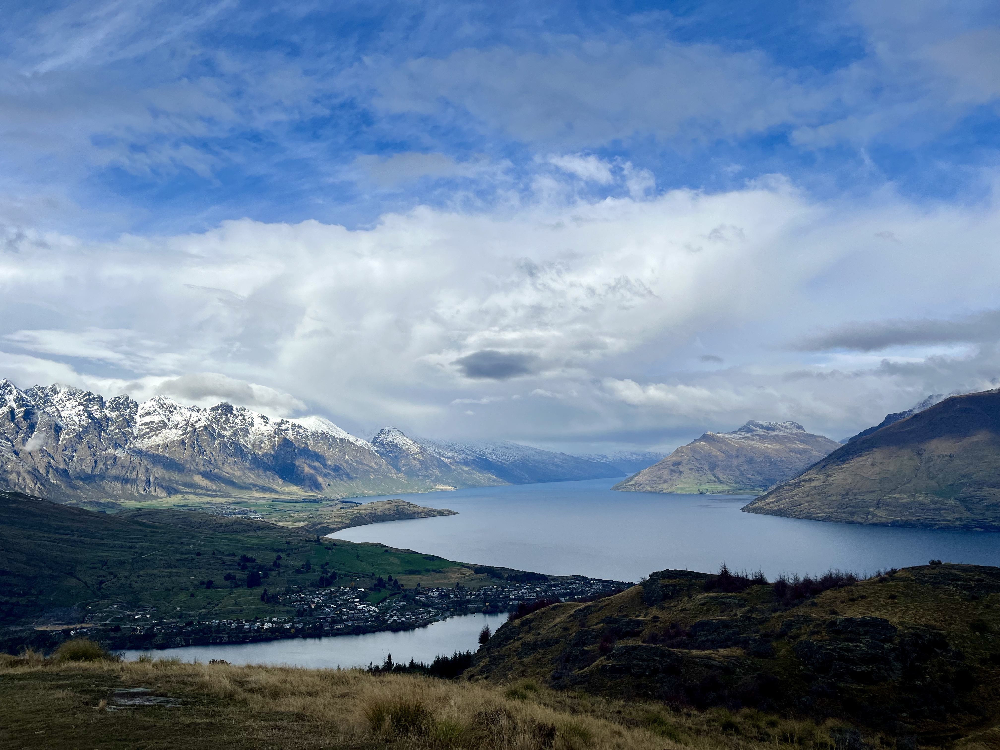
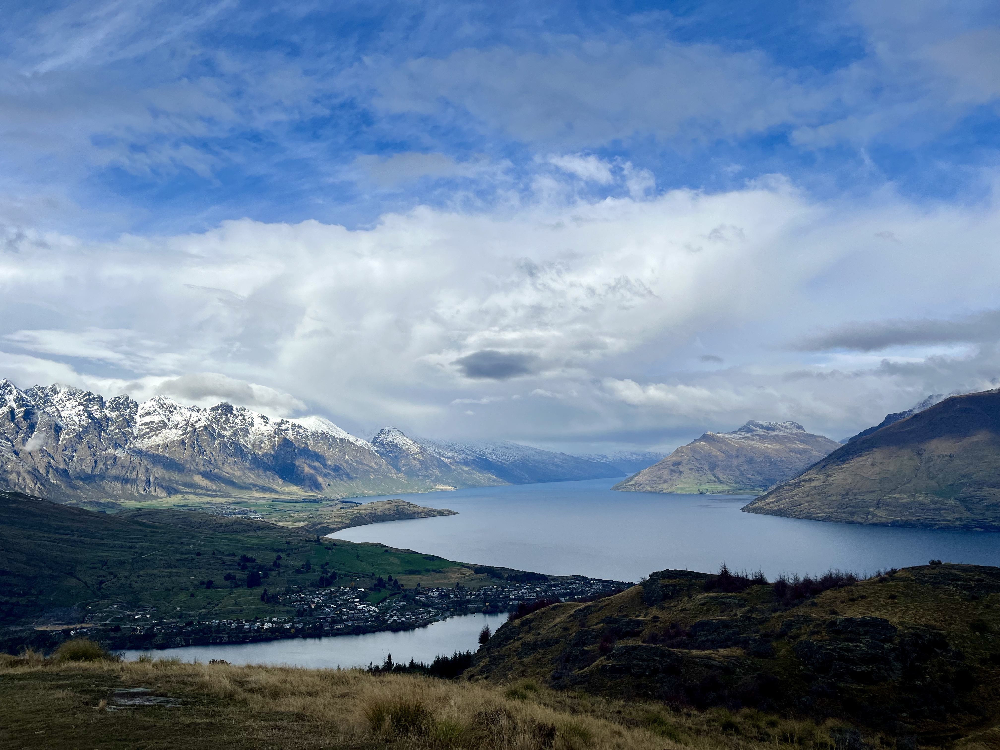
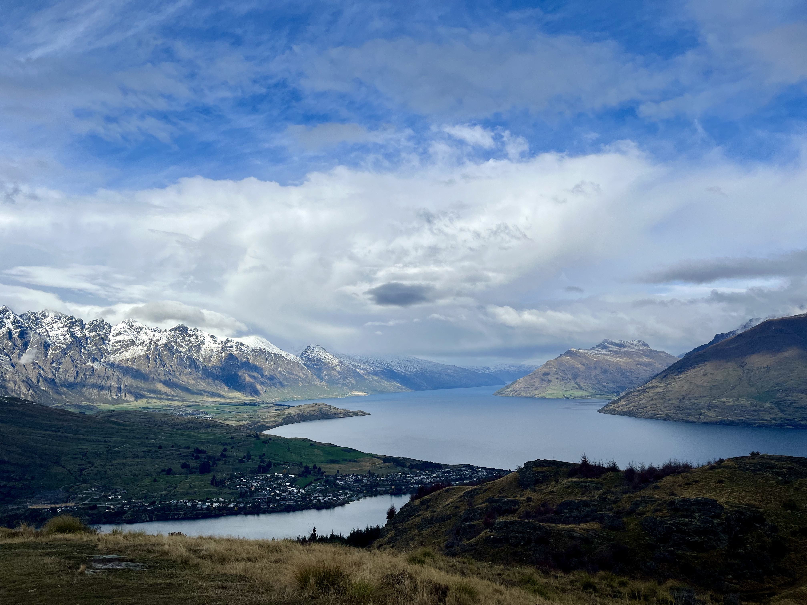

I currently work on digital giving at Causes.com and support early growth stage investing at Supercruise. Before that, I helped grow a premium spirits brand, grew Christmas trees, and worked on wildfire prevention.
